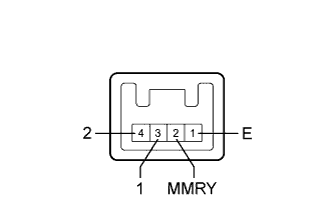

POWER MIRROR CONTROL SYSTEM > Power Mirror Surface Position is not Memorized |
| 1.CHECK CAN COMMUNICATION SYSTEM |
Check if a CAN communication DTC is output (Click here).
| Result | Proceed to |
| DTC is not output | A |
| DTC is output | B |
|
| ||||
| A | |
| 2.READ VALUE USING INTELLIGENT TESTER (SEAT MEMORY SWITCH) |
Using the intelligent tester, read the Data List (Click here).
| Tester Display | Measurement Item/Range | Normal Condition | Diagnostic Note |
| Seat Memory Switch1 | Seat memory switch M1 signal/ON or OFF | ON: Seat memory switch M1 on OFF: Seat memory switch M1 off | - |
| Seat Memory Switch2 | Seat memory switch M2 signal/ON or OFF | ON: Seat memory switch M2 on OFF: Seat memory switch M2 off | - |
| Seat Memory Set SW | Seat memory switch SET signal/ON or OFF | ON: Seat memory switch SET on OFF: Seat memory switch SET off | - |
|
| ||||
| OK | |
| 3.CHECK SEAT MEMORY SWITCH FUNCTION (SEAT POSITION MEMORY FUNCTION) |
Perform a seat memory operation properly (Click here).
When any seat memory switch (M1 or M2 switch) is pressed, check that the driver side seat moves to the memorized position.
|
| ||||
| OK | |
| 4.READ VALUE USING INTELLIGENT TESTER (MIRROR POSITION MEMORY) |
Using the intelligent tester, read the Data List (Click here).
| Tester Display | Measurement Item/Range | Normal Condition | Diagnostic Note |
| Mirror Memory No.1 | Mirror position memorized in memory switch M1/OFF or ON | ON: Memorized OFF: Not memorized | - |
| Mirror Memory No.2 | Mirror position memorized in memory switch M2/OFF or ON | ON: Memorized OFF: Not memorized | - |
| Result | Proceed to |
| OK | A |
| NG (for Driver Side) | B |
| NG (for Passenger Side) | C |
|
| ||||
|
| ||||
| A | ||
| ||
| 5.INSPECT SEAT MEMORY SWITCH |
|  |
Remove the seat memory switch (Click here).
Measure the resistance according to the value(s) in the table below.
| Tester Connection | Switch Condition | Specified Condition |
| 3 (1) - 1 (E) | Seat memory switch M1 pressed | Below 1 Ω |
| 4 (2) - 1 (E) | Seat memory switch M2 pressed | Below 1 Ω |
| 2 (MMRY) - 1 (E) | Seat memory switch SET pressed | Below 1 Ω |
|
| ||||
| OK | |
| 6.CHECK HARNESS AND CONNECTOR (OUTER MIRROR CONTROL ECU - SEAT MEMORY SWITCH) |
Disconnect the K8 ECU connector.
Disconnect the k2 switch connector.
Measure the resistance according to the value(s) in the table below.
| Tester Connection | Switch Condition | Specified Condition |
| K8-2 (M1) - k2-3 (1) | Always | Below 1 Ω |
| K8-3 (M2) - k2-4 (2) | Always | Below 1 Ω |
| K8-1 (MM) - k2-2 (MMRY) | Always | Below 1 Ω |
| K8-13 (MSWE) - k2-1 (E) | Always | Below 1 Ω |
| K8-2 (M1) - Body ground | Always | 10 kΩ or higher |
| K8-3 (M2) - Body ground | Always | 10 kΩ or higher |
| K8-1 (MM) - Body ground | Always | 10 kΩ or higher |
| K8-13 (MSWE) - Body ground | Always | 10 kΩ or higher |
|
| ||||
| OK | ||
| ||